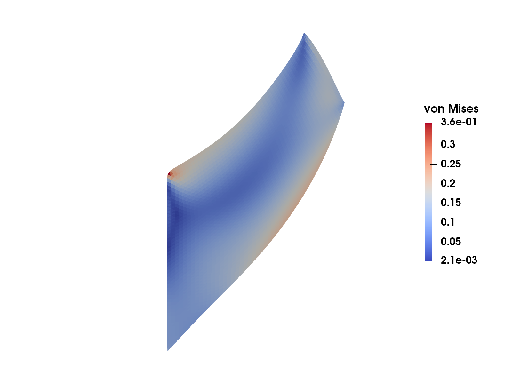
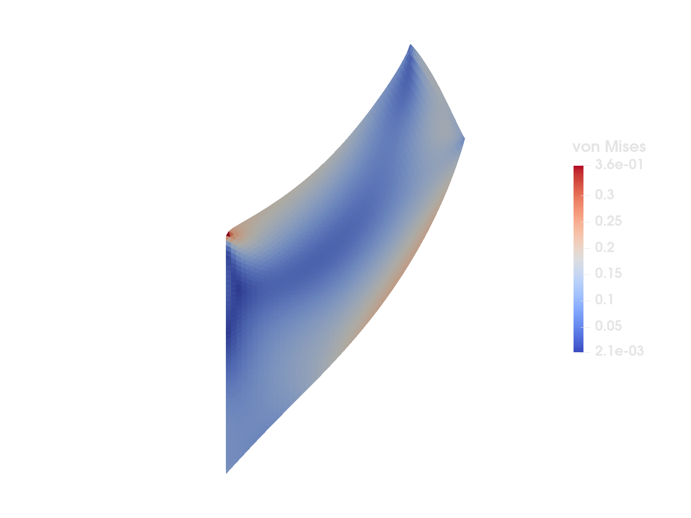
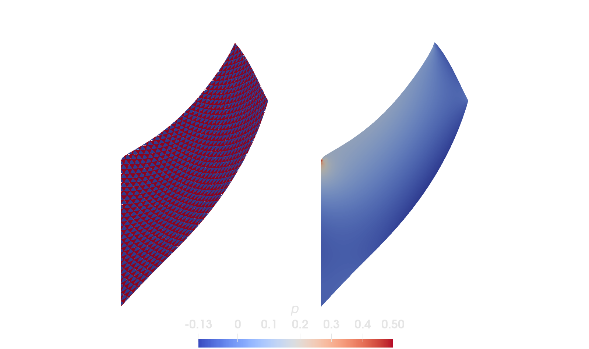

Incompressible elasticity


Figure 1: von Mises stress on the deformed Cook's membrane.
This example is also available as a Jupyter notebook: incompressible_elasticity.ipynb.
Introduction
In this example we solve the equations of linear elasticity for an incompressible material. For (nearly) incompressible materials the standard displacement-based finite element formulation suffers from volumetric locking: low order elements give much too stiff response, and the solution does not (or very slowly) converge with mesh refinement. Mixed elements, where the (hydrostatic) pressure is introduced as an additional unknown field, can be used to overcome this problem. However, for such a mixed element to be stable, the combination of displacement and pressure interpolations needs to fulfill the LBB condition (see e.g. [1]). In this example we will consider two different element formulations:
- linear displacement with linear pressure approximation (does not fulfill LBB)
- quadratic displacement with linear pressure approximation (does fulfill LBB)
The quadratic/linear element is also known as the Taylor-Hood element.
Problem formulation
As a benchmark problem we consider Cook's membrane [2]: a tapered quadrilateral panel $\Omega$ with corners in $(0, 0)$, $(48, 44)$, $(48, 60)$, and $(0, 44)$, which is clamped on the left edge $\Gamma_\mathrm{D}$ and subjected to a shear traction $\boldsymbol{t} = (0, 1/16)$ on the right edge $\Gamma_\mathrm{N}$ (the remaining part of the boundary is traction free). The combination of bending dominated deformation and an incompressible material makes this a classical benchmark for locking. We consider plane strain conditions and a linear elastic material with Poisson's ratio $\nu = 0.5$, i.e. an exactly incompressible material.
For an isotropic linear elastic material the stress $\boldsymbol{\sigma}$ can be split into deviatoric and volumetric parts (cf. the Linear elasticity tutorial),
\[\boldsymbol{\sigma} = 2G\, \boldsymbol{\varepsilon}^\mathrm{dev} + K\, \mathrm{tr}(\boldsymbol{\varepsilon})\, \boldsymbol{I}, \quad \boldsymbol{\varepsilon} = \frac{1}{2} \left[ \boldsymbol{\nabla} \boldsymbol{u} + (\boldsymbol{\nabla} \boldsymbol{u})^\mathrm{T} \right],\]
where $G$ is the shear modulus, $K$ the bulk modulus, and $\boldsymbol{\varepsilon}^\mathrm{dev} = \boldsymbol{\varepsilon} - \frac{1}{3}\mathrm{tr}(\boldsymbol{\varepsilon})\, \boldsymbol{I}$ the deviatoric part of the strain tensor. In the incompressible limit $\nu \rightarrow 0.5$ the bulk modulus $K \rightarrow \infty$, which is the cause of the locking (and for $\nu = 0.5$ the displacement formulation is not even well defined). The remedy is to introduce the pressure
\[p := - K\, \mathrm{tr}(\boldsymbol{\varepsilon}) = - K\, \boldsymbol{\nabla} \cdot \boldsymbol{u}\]
as an additional unknown field. The strong form of the mixed problem then reads: find the displacement $\boldsymbol{u}$ and the pressure $p$ such that
\[\begin{align*} -\boldsymbol{\nabla} \cdot \boldsymbol{\sigma}(\boldsymbol{u}, p) &= \boldsymbol{0} \quad \forall \boldsymbol{x} \in \Omega, \\ \boldsymbol{\nabla} \cdot \boldsymbol{u} + \frac{p}{K} &= 0 \quad \forall \boldsymbol{x} \in \Omega, \end{align*}\]
where the stress is now given by
\[\boldsymbol{\sigma}(\boldsymbol{u}, p) = 2G\, \boldsymbol{\varepsilon}^\mathrm{dev}(\boldsymbol{u}) - p\, \boldsymbol{I},\]
together with the boundary conditions
\[\boldsymbol{u} = \boldsymbol{0} \quad \forall \boldsymbol{x} \in \Gamma_\mathrm{D}, \qquad \boldsymbol{\sigma} \cdot \boldsymbol{n} = \boldsymbol{t} \quad \forall \boldsymbol{x} \in \Gamma_\mathrm{N}.\]
For finite $K$, the second equation is equivalent to the definition of the pressure above, and eliminating $p$ recovers the standard displacement formulation. The advantage of the mixed form is that it remains well defined in the incompressible limit: for $K = \infty$ the second equation reduces to the incompressibility constraint $\boldsymbol{\nabla} \cdot \boldsymbol{u} = 0$.
The corresponding weak form reads: find $(\boldsymbol{u}, p) \in \mathbb{U} \times \mathbb{P}$ such that
\[\begin{align*} \int_\Omega 2G\, \boldsymbol{\varepsilon}^\mathrm{dev}(\delta\boldsymbol{u}) : \boldsymbol{\varepsilon}^\mathrm{dev}(\boldsymbol{u})\, \mathrm{d}\Omega - \int_\Omega (\boldsymbol{\nabla} \cdot \delta\boldsymbol{u})\, p\, \mathrm{d}\Omega &= \int_{\Gamma_\mathrm{N}} \delta\boldsymbol{u} \cdot \boldsymbol{t}\, \mathrm{d}\Gamma \quad \forall\, \delta\boldsymbol{u} \in \mathbb{U}^0, \\ - \int_\Omega \delta p\, (\boldsymbol{\nabla} \cdot \boldsymbol{u})\, \mathrm{d}\Omega - \int_\Omega \frac{1}{K}\, \delta p\, p\, \mathrm{d}\Omega &= 0 \quad \forall\, \delta p \in \mathbb{P}, \end{align*}\]
where $\mathbb{U}$ and $\mathbb{U}^0$ are suitable displacement trial and test sets (in particular, functions in $\mathbb{U}$ fulfill the Dirichlet boundary condition on $\Gamma_\mathrm{D}$, and functions in $\mathbb{U}^0$ are zero there), and $\mathbb{P}$ is the pressure space, for which no boundary conditions apply. In the first equation we have used that $\boldsymbol{\varepsilon}(\delta\boldsymbol{u}) : \boldsymbol{\varepsilon}^\mathrm{dev}(\boldsymbol{u}) = \boldsymbol{\varepsilon}^\mathrm{dev}(\delta\boldsymbol{u}) : \boldsymbol{\varepsilon}^\mathrm{dev}(\boldsymbol{u})$ and $\boldsymbol{\varepsilon}(\delta\boldsymbol{u}) : \boldsymbol{I} = \boldsymbol{\nabla} \cdot \delta\boldsymbol{u}$.
After finite element discretization we obtain the linear system
\[\begin{bmatrix} \underline{\underline{K}}_{uu} & \underline{\underline{K}}_{pu}^\mathrm{T} \\ \underline{\underline{K}}_{pu} & \underline{\underline{K}}_{pp} \end{bmatrix} \begin{bmatrix} \underline{a}_{u} \\ \underline{a}_{p} \end{bmatrix} = \begin{bmatrix} \underline{f}_{u} \\ \underline{0} \end{bmatrix},\]
where
\[\begin{align*} (\underline{\underline{K}}_{uu})_{ij} &= \int_\Omega 2G\, \boldsymbol{\varepsilon}^\mathrm{dev}(\boldsymbol{\phi}^u_i) : \boldsymbol{\varepsilon}^\mathrm{dev}(\boldsymbol{\phi}^u_j)\, \mathrm{d}\Omega, \\ (\underline{\underline{K}}_{pu})_{ij} &= - \int_\Omega \phi^p_i\, (\boldsymbol{\nabla} \cdot \boldsymbol{\phi}^u_j)\, \mathrm{d}\Omega, \\ (\underline{\underline{K}}_{pp})_{ij} &= - \int_\Omega \frac{1}{K}\, \phi^p_i\, \phi^p_j\, \mathrm{d}\Omega, \\ (\underline{f}_{u})_{i} &= \int_{\Gamma_\mathrm{N}} \boldsymbol{\phi}^u_i \cdot \boldsymbol{t}\, \mathrm{d}\Gamma. \end{align*}\]
The system is symmetric, but indefinite (a saddle point problem), which is why the stability (LBB) condition mentioned above comes into play.
Even though we solve the problem in 2D (plane strain), the deviatoric operator must act on the full 3D strain tensor: under plane strain the out-of-plane strain $\varepsilon_{33} = 0$, but $\varepsilon^\mathrm{dev}_{33} \neq 0$. This is handled by the function dev_3d in the program below.
Commented program
What follows is a program spliced with comments. The full program, without comments, can be found in the next section.
using Ferrite, TensorsFirst we generate a simple grid, specifying the 4 corners of Cook's membrane. We also add facetsets for the left edge ("clamped", corresponding to $\Gamma_\mathrm{D}$) and the right edge ("traction", corresponding to $\Gamma_\mathrm{N}$), where we will apply the boundary conditions.
function create_cook_grid(nx, ny) corners = [ Vec{2}((0.0, 0.0)), Vec{2}((48.0, 44.0)), Vec{2}((48.0, 60.0)), Vec{2}((0.0, 44.0)), ] grid = generate_grid(Triangle, (nx, ny), corners) # facetsets for boundary conditions addfacetset!(grid, "clamped", x -> norm(x[1]) ≈ 0.0) addfacetset!(grid, "traction", x -> norm(x[1]) ≈ 48.0) return gridend;Next we define a function to set up our MultiFieldCellValues and FacetValues. For this coupled problem, using MultiFieldCellValues allows us to use the same quadrature rule and geometric interpolation for both the :u and :p fields, which is more efficient and convenient.
function create_values(interpolation_u, interpolation_p) # Quadrature rules qr = QuadratureRule{RefTriangle}(3) facet_qr = FacetQuadratureRule{RefTriangle}(3) # MultiFieldCellValues, for both fields cellvalues = MultiFieldCellValues(qr, (u = interpolation_u, p = interpolation_p)) # FacetValues (only for the displacement, u) facetvalues_u = FacetValues(facet_qr, interpolation_u) return cellvalues, facetvalues_uend;We create a DofHandler, with two fields, :u and :p, with possibly different interpolations
function create_dofhandler(grid, ipu, ipp) dh = DofHandler(grid) add!(dh, :u, ipu) # displacement add!(dh, :p, ipp) # pressure close!(dh) return dhend;We also need to add Dirichlet boundary conditions on the "clamped" facetset, i.e. $\boldsymbol{u} = \boldsymbol{0}$ on $\Gamma_\mathrm{D}$. We specify a homogeneous Dirichlet bc on the displacement field, :u. Note that no boundary condition is prescribed for the pressure field: the traction on $\Gamma_\mathrm{N}$ is a natural boundary condition that enters the weak form through the load vector $\underline{f}_u$, which is assembled in the element routine below, and on the traction free part of the boundary nothing needs to be done.
function create_bc(dh) dbc = ConstraintHandler(dh) add!(dbc, Dirichlet(:u, getfacetset(dh.grid, "clamped"), x -> zero(x), [1, 2])) close!(dbc) return dbcend;The material is linear elastic, which is here specified by the shear and bulk moduli
struct LinearElasticity{T} G::T K::TendNext, we assemble the stiffness matrix and load vector.
function doassemble( cellvalues::MultiFieldCellValues, facetvalues_u::FacetValues, grid::Grid, dh::DofHandler, mp::LinearElasticity ) K = allocate_matrix(dh) f = zeros(ndofs(dh)) assembler = start_assemble(K, f) n = ndofs_per_cell(dh) fe = zeros(n) # local force vector ke = zeros(n, n) # local stiffness matrix # traction vector t = Vec{2}((0.0, 1 / 16)) # local dof ranges for each field dofrange_u = dof_range(dh, :u) dofrange_p = dof_range(dh, :p) for cell in CellIterator(dh) fill!(ke, 0) fill!(fe, 0) assemble_up!(ke, fe, cell, cellvalues, facetvalues_u, grid, mp, t, dofrange_u, dofrange_p) assemble!(assembler, celldofs(cell), ke, fe) end return K, fend;The element routine integrates the local stiffness and force vector for all elements, by computing the blocks $\underline{\underline{K}}_{uu}$, $\underline{\underline{K}}_{pu}$, and $\underline{\underline{K}}_{pp}$ from the weak form above. Since the problem results in a symmetric matrix we choose to only assemble the lower part, and then symmetrize it after the loop over the quadrature points.
function dev_3d(t::SymmetricTensor{2, 2, T}) where {T} # Given 2d and 3d tensors, t2 and t3, where the out-of-plane components for t3 are zero, # we have t2 ⊡ t2 == t3 ⊡ t3, but dev(t2) ⊡ dev(t2) != dev(t3) ⊡ dev(t3), so we have to # expand the tensor before calling `dev` to get the correct value in the element routine. return dev(SymmetricTensor{2, 3}((i, j) -> (i ≤ 2 && j ≤ 2) ? t[i, j] : zero(T)))endfunction assemble_up!(Ke, fe, cell, cellvalues, facetvalues_u, grid, mp, t, dofrange_u, dofrange_p) reinit!(cellvalues, cell) # We only assemble lower half triangle of the stiffness matrix and then symmetrize it. for q_point in 1:getnquadpoints(cellvalues) dΩ = getdetJdV(cellvalues, q_point) for (iᵤ, Iᵤ) in pairs(dofrange_u) ɛdev_i = dev_3d(symmetric(shape_gradient(cellvalues.u, q_point, iᵤ))) for (jᵤ, Jᵤ) in pairs(dofrange_u[1:iᵤ]) ɛdev_j = dev_3d(symmetric(shape_gradient(cellvalues.u, q_point, jᵤ))) Ke[Iᵤ, Jᵤ] += 2 * mp.G * ɛdev_i ⊡ ɛdev_j * dΩ end end for (iₚ, Iₚ) in pairs(dofrange_p) δp = shape_value(cellvalues.p, q_point, iₚ) for (jᵤ, Jᵤ) in pairs(dofrange_u) divδu = shape_divergence(cellvalues.u, q_point, jᵤ) Ke[Iₚ, Jᵤ] += -δp * divδu * dΩ end for (jₚ, Jₚ) in pairs(dofrange_p[1:iₚ]) p = shape_value(cellvalues.p, q_point, jₚ) Ke[Iₚ, Jₚ] += - 1 / mp.K * δp * p * dΩ end end end symmetrize_lower!(Ke) # We integrate the Neumann boundary using the facetvalues. # We loop over all the facets in the cell, then check if the facet # is in our `"traction"` facetset. for facet in 1:nfacets(cell) if (cellid(cell), facet) ∈ getfacetset(grid, "traction") reinit!(facetvalues_u, cell, facet) for q_point in 1:getnquadpoints(facetvalues_u) dΓ = getdetJdV(facetvalues_u, q_point) for (iᵤ, Iᵤ) in pairs(dofrange_u) δu = shape_value(facetvalues_u, q_point, iᵤ) fe[Iᵤ] += (δu ⋅ t) * dΓ end end end end returnendfunction symmetrize_lower!(Ke) for i in 1:size(Ke, 1) for j in (i + 1):size(Ke, 1) Ke[i, j] = Ke[j, i] end end returnend;To evaluate the stresses after solving the problem we once again loop over the cells in the grid. The stress is computed from the constitutive relation of the mixed formulation given in the introduction, $\boldsymbol{\sigma} = 2G\, \boldsymbol{\varepsilon}^\mathrm{dev} - p\, \boldsymbol{I}$, using both the computed displacement and pressure fields. Stresses are evaluated in the quadrature points, however, for export/visualization you typically want values in the nodes of the mesh, or as single data points per cell. For the former you can project the quadrature point data to a finite element space (see the example with the L2Projector in Postprocessing and visualization). In this example we choose to compute the mean value of the stress within each cell, and thus end up with one data point per cell. The mean value is computed as
\[\bar{\boldsymbol{\sigma}}_i = \frac{1}{ |\Omega_i|} \int_{\Omega_i} \boldsymbol{\sigma}\, \mathrm{d}\Omega, \quad |\Omega_i| = \int_{\Omega_i} 1\, \mathrm{d}\Omega\]
where $\Omega_i$ is the domain occupied by cell number $i$, and $|\Omega_i|$ the volume (area) of the cell. The integrals are evaluated using numerical quadrature with the help of cellvalues for u and p, just like in the assembly procedure.
Note that even though all strain components in the out-of-plane direction are zero (plane strain) the stress components are not. Specifically, $\sigma_{33}$ will be non-zero in this formulation. Therefore we expand the strain to a 3D tensor, and then compute the (3D) stress tensor.
function compute_stresses(cellvalues::MultiFieldCellValues, dh::DofHandler, mp::LinearElasticity, a::Vector) ae = zeros(ndofs_per_cell(dh)) # local solution vector u_range = dof_range(dh, :u) # local range of dofs corresponding to u p_range = dof_range(dh, :p) # local range of dofs corresponding to p # Allocate storage for the stresses σ = zeros(SymmetricTensor{2, 3}, getncells(dh.grid)) # Loop over the cells and compute the cell-average stress for cc in CellIterator(dh) # Update cellvalues reinit!(cellvalues, cc) # Extract the cell local part of the solution for (i, I) in pairs(celldofs(cc)) ae[i] = a[I] end # Loop over the quadrature points σΩi = zero(SymmetricTensor{2, 3}) # stress integrated over the cell Ωi = 0.0 # cell volume (area) for qp in 1:getnquadpoints(cellvalues) dΩ = getdetJdV(cellvalues, qp) # Evaluate the strain and the pressure ε = function_symmetric_gradient(cellvalues.u, qp, ae, u_range) p = function_value(cellvalues.p, qp, ae, p_range) # Expand strain to 3D εdev_3d = dev_3d(ε) # Compute the stress in this quadrature point σqp = 2 * mp.G * εdev_3d - one(εdev_3d) * p σΩi += σqp * dΩ Ωi += dΩ end # Store the value σ[cellid(cc)] = σΩi / Ωi end return σend;Now we have constructed all the necessary components, we just need a function to put it all together.
function solve(ν, interpolation_u, interpolation_p) # material Emod = 1.0 Gmod = Emod / 2(1 + ν) Kmod = Emod * ν / (3 * (1 - 2ν)) mp = LinearElasticity(Gmod, Kmod) # Grid, dofhandler, boundary condition n = 50 grid = create_cook_grid(n, n) dh = create_dofhandler(grid, interpolation_u, interpolation_p) dbc = create_bc(dh) # CellValues cellvalues, facetvalues_u = create_values(interpolation_u, interpolation_p) # Assembly and solve K, f = doassemble(cellvalues, facetvalues_u, grid, dh, mp) apply!(K, f, dbc) u = K \ f # Compute the stress σ = compute_stresses(cellvalues, dh, mp, u) σvM = map(x -> √(3 / 2 * dev(x) ⊡ dev(x)), σ) # von Mises effective stress # Export the solution and the stress filename = "cook_" * (interpolation_u == Lagrange{RefTriangle, 1}()^2 ? "linear" : "quadratic") * "_linear" VTKGridFile(filename, grid) do vtk write_solution(vtk, dh, u) for i in 1:3, j in 1:3 σij = [x[i, j] for x in σ] write_cell_data(vtk, σij, "sigma_$(i)$(j)") end write_cell_data(vtk, σvM, "sigma von Mises") end return uendWe now define the interpolation for displacement and pressure. We use (scalar) Lagrange interpolation as a basis for both, and for the displacement, which is a vector, we vectorize it to 2 dimensions such that we obtain vector shape functions (and 2nd order tensors for the gradients).
linear_p = Lagrange{RefTriangle, 1}()linear_u = Lagrange{RefTriangle, 1}()^2quadratic_u = Lagrange{RefTriangle, 2}()^2All that is left is to solve the problem. We choose a value of Poissons ratio that results in incompressibility ($ν = 0.5$) and thus expect the linear/linear approximation to return garbage, and the quadratic/linear approximation to be stable. Note that for $ν = 0.5$ the bulk modulus evaluates to Inf, such that the $1/K$ term in the weak form vanishes, and the pressure equation reduces to the incompressibility constraint.
u1 = solve(0.5, linear_u, linear_p);u2 = solve(0.5, quadratic_u, linear_p);Results
The two solutions are compared in Figure 2, where the computed pressure field is plotted on the deformed geometry.

Figure 2: Pressure field for the linear/linear element (left) and the quadratic/linear element (right). The color scale is fitted to the range of the quadratic/linear solution.
For the stable quadratic/linear element the pressure field is smooth, but for the unstable linear/linear element it oscillates wildly from node to node in a so called checkerboard mode. This is precisely the failure the LBB condition guards against: for the linear/linear pair the pressure space is too rich compared to the displacement space, and (nearly) checkerboard shaped pressure fields produce no divergence that the displacement space can feel, leaving them (almost) unconstrained by the equation system. In this example the checkerboard oscillations are roughly 30 times larger than the true pressure variation, and they completely saturate the color scale on the left. Note that the displacement field, and therefore the deformed shape, looks reasonable also for the linear/linear element, but since the stress depends on the pressure (recall $\boldsymbol{\sigma} = 2G\, \boldsymbol{\varepsilon}^\mathrm{dev} - p\, \boldsymbol{I}$) the stress output from the unstable element is useless. Figure 1 at the top of this page shows the von Mises stress from the stable quadratic/linear solution.
Plain program
Here follows a version of the program without any comments. The file is also available here: incompressible_elasticity.jl.
using Ferrite, Tensorsfunction create_cook_grid(nx, ny) corners = [ Vec{2}((0.0, 0.0)), Vec{2}((48.0, 44.0)), Vec{2}((48.0, 60.0)), Vec{2}((0.0, 44.0)), ] grid = generate_grid(Triangle, (nx, ny), corners) # facetsets for boundary conditions addfacetset!(grid, "clamped", x -> norm(x[1]) ≈ 0.0) addfacetset!(grid, "traction", x -> norm(x[1]) ≈ 48.0) return gridend;function create_values(interpolation_u, interpolation_p) # Quadrature rules qr = QuadratureRule{RefTriangle}(3) facet_qr = FacetQuadratureRule{RefTriangle}(3) # MultiFieldCellValues, for both fields cellvalues = MultiFieldCellValues(qr, (u = interpolation_u, p = interpolation_p)) # FacetValues (only for the displacement, u) facetvalues_u = FacetValues(facet_qr, interpolation_u) return cellvalues, facetvalues_uend;function create_dofhandler(grid, ipu, ipp) dh = DofHandler(grid) add!(dh, :u, ipu) # displacement add!(dh, :p, ipp) # pressure close!(dh) return dhend;function create_bc(dh) dbc = ConstraintHandler(dh) add!(dbc, Dirichlet(:u, getfacetset(dh.grid, "clamped"), x -> zero(x), [1, 2])) close!(dbc) return dbcend;struct LinearElasticity{T} G::T K::Tendfunction doassemble( cellvalues::MultiFieldCellValues, facetvalues_u::FacetValues, grid::Grid, dh::DofHandler, mp::LinearElasticity ) K = allocate_matrix(dh) f = zeros(ndofs(dh)) assembler = start_assemble(K, f) n = ndofs_per_cell(dh) fe = zeros(n) # local force vector ke = zeros(n, n) # local stiffness matrix # traction vector t = Vec{2}((0.0, 1 / 16)) # local dof ranges for each field dofrange_u = dof_range(dh, :u) dofrange_p = dof_range(dh, :p) for cell in CellIterator(dh) fill!(ke, 0) fill!(fe, 0) assemble_up!(ke, fe, cell, cellvalues, facetvalues_u, grid, mp, t, dofrange_u, dofrange_p) assemble!(assembler, celldofs(cell), ke, fe) end return K, fend;function dev_3d(t::SymmetricTensor{2, 2, T}) where {T} # Given 2d and 3d tensors, t2 and t3, where the out-of-plane components for t3 are zero, # we have t2 ⊡ t2 == t3 ⊡ t3, but dev(t2) ⊡ dev(t2) != dev(t3) ⊡ dev(t3), so we have to # expand the tensor before calling `dev` to get the correct value in the element routine. return dev(SymmetricTensor{2, 3}((i, j) -> (i ≤ 2 && j ≤ 2) ? t[i, j] : zero(T)))endfunction assemble_up!(Ke, fe, cell, cellvalues, facetvalues_u, grid, mp, t, dofrange_u, dofrange_p) reinit!(cellvalues, cell) # We only assemble lower half triangle of the stiffness matrix and then symmetrize it. for q_point in 1:getnquadpoints(cellvalues) dΩ = getdetJdV(cellvalues, q_point) for (iᵤ, Iᵤ) in pairs(dofrange_u) ɛdev_i = dev_3d(symmetric(shape_gradient(cellvalues.u, q_point, iᵤ))) for (jᵤ, Jᵤ) in pairs(dofrange_u[1:iᵤ]) ɛdev_j = dev_3d(symmetric(shape_gradient(cellvalues.u, q_point, jᵤ))) Ke[Iᵤ, Jᵤ] += 2 * mp.G * ɛdev_i ⊡ ɛdev_j * dΩ end end for (iₚ, Iₚ) in pairs(dofrange_p) δp = shape_value(cellvalues.p, q_point, iₚ) for (jᵤ, Jᵤ) in pairs(dofrange_u) divδu = shape_divergence(cellvalues.u, q_point, jᵤ) Ke[Iₚ, Jᵤ] += -δp * divδu * dΩ end for (jₚ, Jₚ) in pairs(dofrange_p[1:iₚ]) p = shape_value(cellvalues.p, q_point, jₚ) Ke[Iₚ, Jₚ] += - 1 / mp.K * δp * p * dΩ end end end symmetrize_lower!(Ke) # We integrate the Neumann boundary using the facetvalues. # We loop over all the facets in the cell, then check if the facet # is in our `"traction"` facetset. for facet in 1:nfacets(cell) if (cellid(cell), facet) ∈ getfacetset(grid, "traction") reinit!(facetvalues_u, cell, facet) for q_point in 1:getnquadpoints(facetvalues_u) dΓ = getdetJdV(facetvalues_u, q_point) for (iᵤ, Iᵤ) in pairs(dofrange_u) δu = shape_value(facetvalues_u, q_point, iᵤ) fe[Iᵤ] += (δu ⋅ t) * dΓ end end end end returnendfunction symmetrize_lower!(Ke) for i in 1:size(Ke, 1) for j in (i + 1):size(Ke, 1) Ke[i, j] = Ke[j, i] end end returnend;function compute_stresses(cellvalues::MultiFieldCellValues, dh::DofHandler, mp::LinearElasticity, a::Vector) ae = zeros(ndofs_per_cell(dh)) # local solution vector u_range = dof_range(dh, :u) # local range of dofs corresponding to u p_range = dof_range(dh, :p) # local range of dofs corresponding to p # Allocate storage for the stresses σ = zeros(SymmetricTensor{2, 3}, getncells(dh.grid)) # Loop over the cells and compute the cell-average stress for cc in CellIterator(dh) # Update cellvalues reinit!(cellvalues, cc) # Extract the cell local part of the solution for (i, I) in pairs(celldofs(cc)) ae[i] = a[I] end # Loop over the quadrature points σΩi = zero(SymmetricTensor{2, 3}) # stress integrated over the cell Ωi = 0.0 # cell volume (area) for qp in 1:getnquadpoints(cellvalues) dΩ = getdetJdV(cellvalues, qp) # Evaluate the strain and the pressure ε = function_symmetric_gradient(cellvalues.u, qp, ae, u_range) p = function_value(cellvalues.p, qp, ae, p_range) # Expand strain to 3D εdev_3d = dev_3d(ε) # Compute the stress in this quadrature point σqp = 2 * mp.G * εdev_3d - one(εdev_3d) * p σΩi += σqp * dΩ Ωi += dΩ end # Store the value σ[cellid(cc)] = σΩi / Ωi end return σend;function solve(ν, interpolation_u, interpolation_p) # material Emod = 1.0 Gmod = Emod / 2(1 + ν) Kmod = Emod * ν / (3 * (1 - 2ν)) mp = LinearElasticity(Gmod, Kmod) # Grid, dofhandler, boundary condition n = 50 grid = create_cook_grid(n, n) dh = create_dofhandler(grid, interpolation_u, interpolation_p) dbc = create_bc(dh) # CellValues cellvalues, facetvalues_u = create_values(interpolation_u, interpolation_p) # Assembly and solve K, f = doassemble(cellvalues, facetvalues_u, grid, dh, mp) apply!(K, f, dbc) u = K \ f # Compute the stress σ = compute_stresses(cellvalues, dh, mp, u) σvM = map(x -> √(3 / 2 * dev(x) ⊡ dev(x)), σ) # von Mises effective stress # Export the solution and the stress filename = "cook_" * (interpolation_u == Lagrange{RefTriangle, 1}()^2 ? "linear" : "quadratic") * "_linear" VTKGridFile(filename, grid) do vtk write_solution(vtk, dh, u) for i in 1:3, j in 1:3 σij = [x[i, j] for x in σ] write_cell_data(vtk, σij, "sigma_$(i)$(j)") end write_cell_data(vtk, σvM, "sigma von Mises") end return uendlinear_p = Lagrange{RefTriangle, 1}()linear_u = Lagrange{RefTriangle, 1}()^2quadratic_u = Lagrange{RefTriangle, 2}()^2u1 = solve(0.5, linear_u, linear_p);u2 = solve(0.5, quadratic_u, linear_p);This page was generated using Literate.jl.